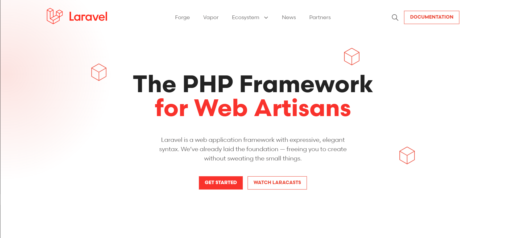
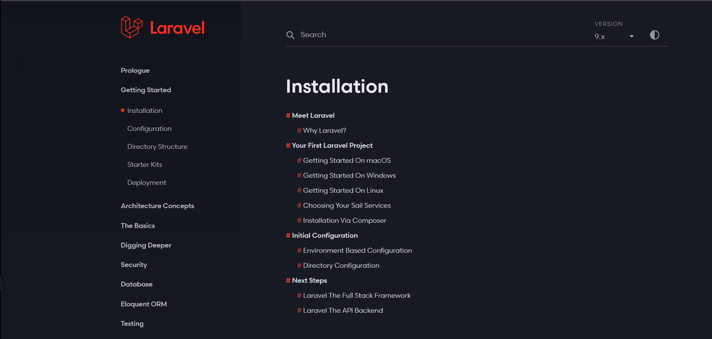
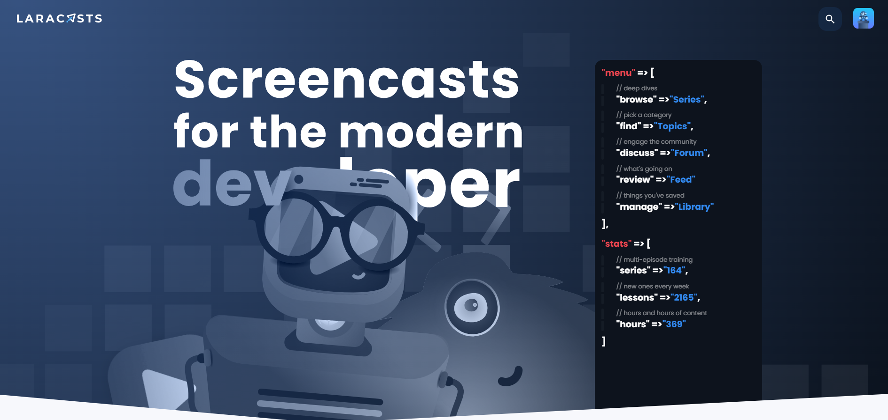
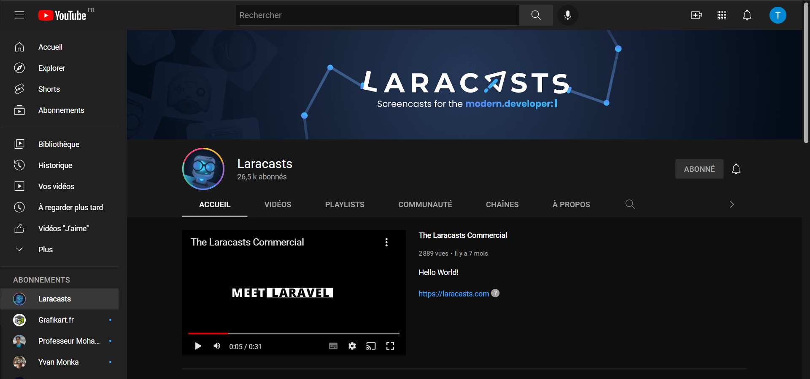

Définition
Le principal avantage de la Veille Technologique est d'identifier ou de prévoir les innovations dans les business units. Les ressources de la veille technologique constituent des informations stratégiques importantes pour anticiper, développer et exploiter les inventions. La mise en place d'une observation technique permanente dans une zone définie peut répondre à plusieurs objectifs. Cela jette les bases pour identifier et comprendre les informations clés sur les concurrents et les technologies. C'est une méthode de collecte d'informations stratégiques sur les concurrents et leurs innovations.
THÉMATIQUE CHOISIE
- Laravel 9
- 
- Laravel a été créé par Taylor Otwell en juin 20112.
- Le référentiel Laravel/laravel présent sur le site GitHub contient le code source des premières versions de Laravel. À partir de la cinquième version, le framework est développé au sein du référentiel Laravel/framework.
- En peu de temps, une communauté d'utilisateurs du framework s'est constituée, et il est devenu en 2016 le projet PHP le mieux noté de GitHub.
- Laravel reste pourtant basé sur son grand frère Symfony, pour au moins 30 % de ses lignes.
ressources utilisé
- Afin de développer cette veille j'ai effectué des recherches sur de nombreux Sites :
- 
- J'ai suivis une formation sur le site Laracast et sur Youtube pour apprendre l'utilisation du Laravel :
- 
- J'ai aussi suivis une formation sur Youtube pour apprendre l'utilisation du Laravel :
- 
Les points Forts de ma veille :
- les informations sont quasiment tous utiles et de qualités
- le flux d’information est très élevé
- Facile d’utilisation et rapide d’accès
- Bonne Organisation et très bonne méthologie de travail
Les points faibles de ma veille :
- Trop d’informations , difficiles de tout lire et surtout trié
- Beaucoup d’informations se ressemblent et sont identiques
Conclusion
Laravel est un framework web open-source écrit en PHP respectant le principe modèle-vue-contrôleur et entièrement développé en programmation orientée objet. Laravel est distribué sous licence MIT, avec ses sources hébergées sur GitHub.